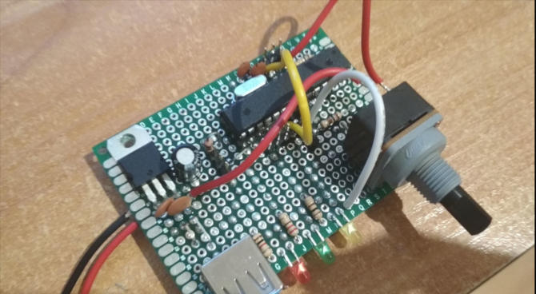

Nazywam się Jakub Kuziemski, znany również, jako "Kivi", ale to jest oczywiście na górze tej strony. Jestem 19 letnim robotykiem... To znaczy, chciałbym kiedyś zostać. Na razie jestem w klasie universyteckiej, maturalnej w IV Liceum Ogólnokształcącym w Toruniu, a wszystko co można zobaczyć w portfolio jest tylko hobistyczną, dobrą zabawą. Po maturze zamierzam studiować Automatyke i Robotykę na Politechnice Warszawskiej. Znam język C++ (oraz wariację Arduino C/C++) bardzo dobrze, włączając w to bibliotekę graficzną SFML. Jak można się domyślić, wiem też co nieco o programowaniu webowym, wystarczająco, żeby można było stworzyć tę stronę. Programowałem też trochę w pythonie, C, C#, Java i cieszę się na myśl o nauce kolejnych języków! Chętne uczestniczę w większych projektach, więc skontaktuj się.
W wolnym czasie, kiedy nie pracuję nad nowymi projektami, kocham podróżować (można się było domyślać po zdjęciach). Jestem też nastolatkiem, takżę nie pogardze spotkaniem ze znajomymi, tańcem czy grami (jak Cytadela lub Wsiąść do Pociągu). Uwielbiam też grać w szachy, szczególnie z moją dziewczyną, którą widać na zdjęciu. Jest ona świetnym grafikiem i razem udało nam się stworzyć kilka naprawdę dobrze wyglądających projektów (jak np. ARA czy nawet ta strona).
Lampka Reagująca na muzyke opiera się na analogowym czujniku dźwiękowym firmy DFRobot i atmedze328, podłączonymi do adresowalnych diod RGB ws2812. W zależności od głośności, ledy zapalają się, gasną i zmieniają kolory. Jeśli muzyka jest cicho, lampka świeci się na niebiesko, kiedy głośność rośnie zmienia kolor na czerwony, a jeśli jest czerwona zbyt długo zmienia się płynnie w zielony. Czułość lampki jest ustawiana przez potencjometr (w razie gdybym chciał korzystać, i w domowym zaciszu, i na głośnej imprezie).
Wszystko jest na mojej płytce prototypowej. Rama lampki jest zrobiona ze słoika obklejonego matą łazienkową. Jednostka sterująca jest zamknieta w pudełku i może być zasilana przez USB albo prądem stałym do 12V. Trzy diody informacyjne pokazują kolejno, czy zasilanie jest podłączone, czy lampka jest włączona, oraz czy atmega działa poprawnie.
Poniżej można zobaczyć zdjęcia płytki, oraz wnętrze jednostki sterującej, ale najważniejsze to nagranie gdzie lampka faktycznie reaguje na dźwięk. Miłego oglądania!

Jack - Inteligentny asystent
Jack to mój największy projekt jak dotąd. Moim głównym celem jest stworzenie własnego asystenta kontrolującego gniazdka, światła oraz większość moich wcześniejszych projektów. Dużo by pisać, lepiej spojrzeć na video i zobaczyć znaczną część pierwszego modelu demonstracyjnego. Wszystko jest w fazie testów i rozwoju, ale planujemy z Jackiem skończyć wszystko do końca wakacji 2020. Miejmy nadzieje, że nie będzie stawiał oporu.
Wyświetlacz Ping-Pong LED
Wyświetlacz jest zrobiony z piłeczek ping-pongowych (w zasadzie z połówek), podświetlonych diodami ws2812. Zwykle pokazuje aktualny czas, który pobiera z zegaru DS1307. Moduł ma małą baterię, więc nawet gdy nie jest podłączony do zasilania, wie którą mamy godzinę. Wyświetlacz może pokazywać także proste animacje (zobacz video). Próbowałem nawet zaprogramować prostą grę (podobną do googlowego dinozaura), ale jest jeszcze nie dokończona. Wszystko jest kontrolowane przez atmege328. Pudełko z jednostką centralną ma 3 przyciski zmianiające tryb pracy (zegarek, animacje, stoper, gra), kolory i jasność. W przyszłości, chcę żeby ten projekt był połączony z Jackiem.
CałkaBoty
CałkaBoty to roboty minisumo stworzone przeze mnie i mojego przyjaciela Jakuba Delicata. Pierwszy, CałkaBot 1.0 został stworzony w 2018 na zawody miniSUMO na UTP w Bydgoszczy. Byliśmy uczniami pierwszej klasy liceum i nie mieliśmy wielkiego doświadczenia, więc było dla nas wielkim zaskoczeniem, kiedy dostaliśmy się do półfinałów. Drugi robot, CałkaBot 2.0, stworzony następnego roku, wygrał nagordę specjalną w Bydgoszczy. Zostaliśmy docenieni za postęp i za płytkę PCB projektu Deliego. Z obydwoma robotami, ulepszonymi do wersji 1.1 i 2.1, pojechaliśmy na Bałtyckie Bitwy Robotów, aby zmierzyć się ze studentami. Nie byliśmy zaskoczen, kiedy przegrywaliśmy wiele walk, ale CałkaBoty często były godnymi przeciwnikami. Udało nam się nawet wygrać kilka walk przeciwko studentom z politechnik.
CałkaBoty 3d0 i 3k0 nadchodzą.
CałkaBot 1.0
Ale po kolei, CałkaBot 1.0 był głównie zasponsorowany przez IV Liceum im. Tadeusza Kościuszki w Toruniu. Użyliśmy najpopularniejszych silników pololu i, jak każdy robot miniSUMO, czujników zbliżeniowych na podczerwień i transoptorów do widzenia krawędzi pola walki. Wszystko kontrolowane przez mikrokontroler atmega328p i sterownik silników L298n. Rama robota jest zrobiona z płytek miedzianych. Naszą główną przewagą miało być posiadanie 4 kół i dwóch przodów. Kiedy dojeżdżamy do krawędzi planszy, nie musimy się odwracać, po prostu jedziemy w tył, który jest teraz nowym przodem.
Jak zauważyliśmy na zawodach, nasz robot był dość dobry. Były to zawody szkolne, więc uczestnicy często mieli dziwne problemy, jak np. nie dostrzeganie przeciwnika czy krawędzi. My również napotkaliśmy nieprzyjemny problem, który był spowodowany małym doświadczeniem (wtedy) w programowaniu mikrokontrolerów. Teraz plujemy sobie w brodę za nie dodanie kondensatorów filtrujących pomiędzy masą a rezonatorem, oraz nie dodanie rezystora podciągającego reset do 5V. Po mocnym uderzeniu, albo nawet czasem szybkim zrywie, nasz robot restartował się. Jednak nawet z tym problemem udało nam się dostać do grupy półfinałowej, w której niefortunnie skończyliśmy na drugim miejscu. Była to wielka lekcja, a z nową wiedzą, wiedzieliśmy że damy z siebie wszystko za rok.
CałkaBot 1.0 i faza budowy, powyżej.
Pierwsze dwie walki CałkaBota 1.0, stoczone w Bydgoszczy, poniżej. Przeciwsko pierwszemu przeciwnikowi CałkaBot jest bliżej kamery, przeciwko drugiemu, dalej.
CałkaBot 2.0
Naszego drugiego robota mini sumo zdecydowaliśmy się nazwać CałkaBot 2.0 aby uhonorować jego poprzednika. Tym razem zdecydowaliśmy się stworzyć własną płytkę PCB, co zrobił Deli. Nie zmieniliśmy silników, czujników zbliżeniowych i ramy. Zdecydowaliśmy się jednak zmienić czujniki podłoża, co okazało się być złą decyzją (CNY70 były znacznie lepsze). Większość rzeczy, było znów zasponsorowane przez szkołę. Tym razem, jako, że zauważyliśmy, że CałkaBot 1.0 był zbyt lekki, dołożyliśmmy ołowiu na górę robota, jako dodatkowe obciążenie. Nasz robot ważył dokładnie 500g (to jest maksymalna waga dla robotów mini sumo). Po kilku walkach między Całkabotami, zrozumieliśmy, że ten nowy jest o wiele silniejszy.
Podczas zawodów w Bydgoszczy, natknęliśmy się na nieprzyjemny problem. Mówiąc krótko, kiedy nasz robot został zbyt mocno uderzony podskakiwał, przez co myślał, że przeciwnik jest za nim (błąd podczas mocowania czujników), więc sam wyjeżdżał za ring, przez co przegrał kilka walk. Nie udało nam się wyjść z grupy, ale nasze starania zostały docenione przez głównego sponsora zawdodów, więc wygraliśmy nagrodę specjalną. CałkaBot 2.0 wałczył bardzo dobrze w niektórych walkach więc zdecydowaliśmy się ulepszyć, i jego, i CałkaBot 1.0 i pojechać na Bałtyckie Bitwy Robotów. Tam poznaliśmy wielu nowych ludzi i zdobyliśmy mase doświadczenia. Starliśmy się także z studentami z politechnik i czasem udało nam się z nimi wygrać. Z taką ilością nowej wiedzy zdecydowaliśmy się nie budować kolejnego robota, a dwa roboty, tak aby mogły walczyć między sobą, a my widzieć dokładnie ich słabe aspekty (walka między nowym a starym CałkaBotem była mało obiektywna, bo nowy zawsze wygrywał i wydawał się lepszy).
CałkaBot 2.0 i faza budowy powyżej.
Jedna z walk CałkaBota 2.0 w Bydgoszczy. CałkaBot startuje bliżej kamerzysty.
CałkaBot 3k0
Zdecydowaliśmy się zbudować 2 roboty w tym roku, jeden zrobiony przeze mnie, nazwany 3k0 (jak 3.0, ale autorstwa Kiviego, stąd k), jeden przez Deliego, nazwany 3d0. Tutaj będę publikował informacje o moim, więc szykujcie się. CałkaBot 3k0 nadchodzi!
Ten projekt jest w zasadzie bardziej elektroniczno mechaniczny niż programistyczny (jest jedynie podłączony do Jacka). Zasilacz zrobiłem przez przerobienie dwóch zasilaczy komputerowych. Jednego użyłem jako generatora napięcia (-12V, 3,3V, 5V, 12V), drugiego wybebeszyłem i użyłem tylko ramy, którą pociąłem szlifierką. Zasilacz jest wyposażony w złącza bananowe, złącza śrubowe i złącza głośnikowe. Najważniejszą funkcją jest regulowane (przez potencjometr) napięcie, zrobione przy użyciu przetwornicy LM2569. Zrobiłem też mały wiatraczek (z włącznikiem), żeby zdmuchiwać opary podczas lutowania. Wszystko może być włączane ręcznie lub przez Jacka.
ARA - szachopodobna gra
Ara to gra napisana w C++ z użyicem biblioteki SFML, zrobiona przez grupę znajomych podczas ferii w 2019, jako wyzwanie do zrobienia gry w zaledwie dwa tygodnie. Jest to gra turowa, podobna do szachów na pierwszy rzut oka, ale ma wielkie różnice, takie jak inne ruchy figur, znikanie mapy czy dwa ruchy na turę. Zasady mogą wydawać się dziwne i zawiłe na początku, ale po kilku grach zaczynają mieć dużo sensu i można niesamowicie dobrze się bawić. Po feriach moi znajomi praktycznie porzucili projekt. Staram się dodawać nowe grafiki stworzone przez naszego grafika i wciąż kiedy mam nadmiar wolnego czasu poprawiam kilka rzeczy. Mam nadzieję, że gra będzie grywalna i dostępna do pobrania pod koniec 2020.
Aktualny główny programista: Jakub Kuziemski
Programiści: Jakub Delicat Paweł Knut Adam Wieczarek
Główny grafik: Asia Butkiewicz
Graficy: Antonina Smoktunowicz Julia Ciechanowska
Grzesiek - mój pierwszy robot
Grzesiek to mój pierwszy projekt. Z nim zakochałem się w robotyce, elektronice i programowaniu. Były w zasadzie 2 wersje robota. Pierwszego zrobiłem w 2017 na zakończenie gimnazjum (mam go nawet wpisanego na świadectwie). Nie ma się czym przechwalać, bo miałem 16 lat, a program jest paskudny patrząc z perspektywy czasu. Ale nagrania są urocze i przywołują wspomnienia. Druga wersja Grześka została porzucona (rozebrany i zamkniety w pudełku), ale mam nadziej, że kiedyś znajde czas by go wskrzesić.
Najstarsza wersja Grześka na dole, a najnowsza u góry.